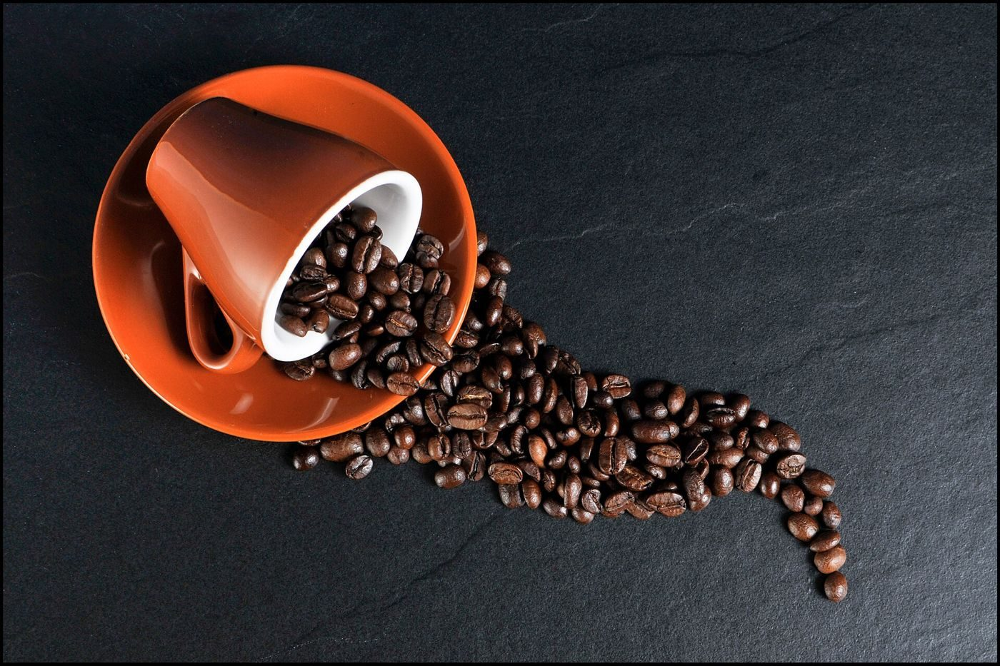
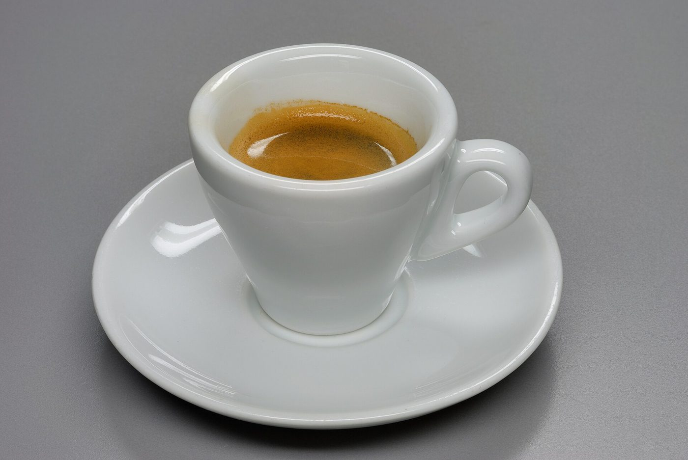

制作側の連想
モカポットの部位を、配置図にしてみる
モカポット(直火式のコーヒーメーカー)の部位を図にしたもので、制作側の連想です。お店の理念・由来とは無関係で、実際の製品の仕様を示すものでもありません。 部品を下から順に重ねた分解図に、六つの番号をふっています。
凡例
六つの部位
- 1下タンク(ボイラー)水を入れる、いちばん下の容器。ふちのまわりにねじ山があり、上の部品と組み合わさる。
- 2安全弁下タンクの側面に付く小さな金具。中の圧力が上がりすぎたときに逃がすためのもの。
- 3ファンネル下タンクにはめ込む、じょうごの形をした部品。ここにコーヒーの粉を入れる。
- 4フィルタープレート粉の上にのせる、細かな穴のあいた丸い金属の板。
- 5ガスケット上ポットの内側に付く、すき間をふさぐゴムの輪。
- 6上ポット(サーバー)できあがったコーヒーがたまる、上側の容器。注ぎ口・取っ手・ふたが付く。
写真(イメージ)
写真(イメージ)





写真はイメージです。お店のものではありません。